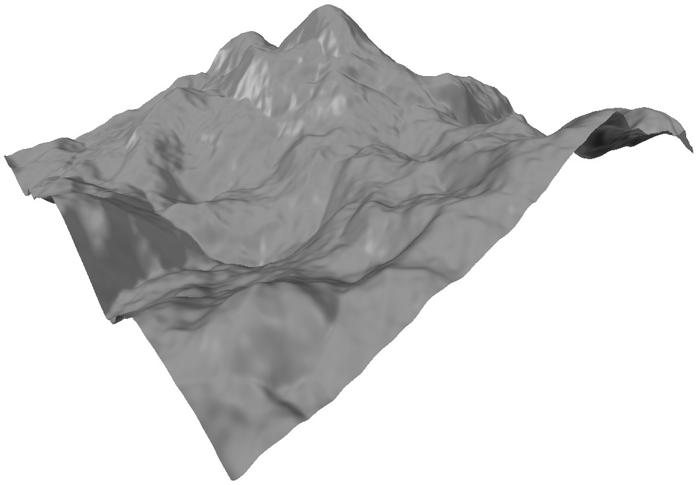
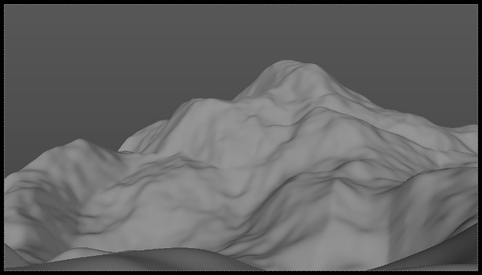
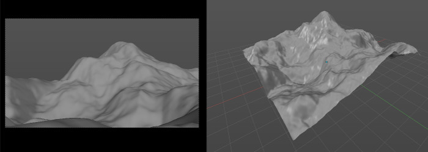

Quickstart Guide¶
This quick tutorial will guide you through the process of generating, tweaking a terrain and furnishing it with trees. Follow the exact values in here to get a good result, of course you can also experiment with your own.
Don’t be afraid to try different things! As long as you input the same seed value, Mirage will generate the same basic terrain shape.

Generating a terrain¶
For this guide we’ll create valley kind of scene. Let’s start by finding a good seed value. Let’s start generating random terrains using the normal detail level to check the overall shape. Make sure you enable autoseed (the clock icon next to the seed value). That way Mirage will use a new seed value every time you click Generate.
I found a good terrain at a seed of 626198583. This terrain has a nice drop around the middle, and a nice peak that we can show in the background.

Now that we have a good terrain to begin let’s tweak it a little. Before doing anything else disable autoseed by clicking the icon again, that way Mirage won’t change the seed anymore.
- Increase Max height to 3.5. This will give the valleys a little more depth.
- Lower the Roughness to 5. This will make the terrain smoother (since valleys
- are not that “bumpy”). Increase Deformation to 8. This will give it more
- ridges and, add some interesting twists.

Next, it’s time to bump up the vertex count and get some more detail in our terrain. You may not want to do this, depending on the complexity of your scene or whether you have a “target” vertex count.
We have two options: we can apply a subsurf modifier to the current terrain, or we can re-generate it with a higher level of detail.
For this guide, I will delete the terrain and re-generate it with a medium level of detail.
Before moving on, let’s look for a good camera angle. That way we know what parts of the land will be in view and which won’t. There’s no need to waste time sculpting features that no one will see.
Tweaking and sculpting¶
Most of the time you will want to modify the terrain to suit your scene (or your
artistic vision) better. One method is to enter edit mode and start moving
vertices around with proportional editing enabled (pressing the O key).
However this is only useful for meshes with low poly count. The best alternative
for large meshes like the one we’re working on is to sculpt.
Press tab and enter sculpt mode. For a simple tweak like this, I’ll only
use the default brush. Click to add or bump, CTRL-Click to
subtract or move down and SHIFT-Click to soften.
First I lowered a small bump to the left of the main peak. I wanted it to fall more sharply so it would provide some contrast to the lower areas. Next I increase the height of the left side, so instead of dropping down it stays at about the same height. This improves the composition, making it look more “stable”.
This is all open to personal taste, so feel free to do it your way. In the image above you can also see how I like to setup Blender for sculpting Terrains: one 3D View to work freely on, and another one with Camera View to check the results.
Once you have customized the terrain to your liking it’s time to update the vertex groups. Mirage automatically created Height and Slope weight groups when we generated the terrain. However, now that we have changed the terrain we also have to update these groups. This is necessary for the next step, trees, since Tree distribution uses these vertex groups for it’s height and slope settings.
To update them, look for the Tools panel in the Mirage tab with the terrain selected. Then click the Update height and Update slope buttons.
Adding Trees¶
Mirage doesn’t come with tree models or generation functions. So you’ll have to generate them using Sapling or Arbaro, model them yourself, or get models from the web.
In this case I’ll be using the Spruce Pine Tree pack from Blending Nature
Whatever way you get the trees, make sure they are in a group. You can easily
tell if they are in a group because they will have a green outline when
selected. If they are not grouped, you can group them by selecting them and
pressing CTRL-G. Move them out of camera view, or even better to the last
layer (press M and click the last square).

Look for the Tree Distribution panel in the Mirage tab and set the Tree Group to the group containing the tree objects. Set the Density at 500 for now. We’ll start with a small density amount to check scale and maximum height without slowing down Blender too much.
Since my scene is a valley and some areas will be high, I’ve lowered the maximum height to 40%. If you’re going for extreme realism, you might want to look up the height range for the different tree species you plan to use.
I also increased the maximum slope to 60º to cover a bit more ground.
The proper scale for my terrain and tree models is 0.1. You can use the automatic scale setting (Lock to terrain scale) to help you figure out the best scale for your models.

Once we have everything else set it’s time to increase the density to the final level. That will be around 50,000 for my scene. If you set this from the Tree Distribution panel, Mirage will automatically set the display to Cross for the viewport. The viewport can’t handle too much geometry currently, and showing thousands of trees with a million or so vertex each will slow Blender down to a crawl (if not crash it).

The Tree Density vertex group controls the distribution of trees. Once you’ve generated the trees, you can tweak that group to optimize the distribution. For instance you can paint all the areas that are outside of the camera view so you don’t waste resources on particles out of view from the camera. Keep in mind you’ll have to reduce the number of particles in the particle system. Don’t use the Tree Distribution panel to do this, as it will overwrite your customized vertex group!
A note on materials¶
As we saw in the sculpting section, Mirage can create and keep updated vertex groups for the terrain. That also includes color vertex groups that you can use in Cycles to make materials that can change depending the height and slope.
In the nodes editor, bring up the add node menu (shift-a) and look for
the Input > Vertex Color submenu. You’ll find the groups there. You might also
want to use a color ramp node to control them better.
When UV Unwrapping it’s useful to remember the terrain is essentially a
grid. That means it can be unwrapped into a grid. To do this, first go into
orthogonal top view (press 5 and then 7). Now go into edit mode,
and press u to bring the unwrap menu. From the menu select
Project From View (Bounds). Now you have a grid-like UV that you can tweak to
your liking. Note that there will be some stretching in along the slopes.
Another option is to use Smart UV Project. This option will give you less stretching, but it will also create more islands and be more irregular.
That concludes this guide. If you want to know more about all the settings please refer to the other sections of this manual. I hope you have found this quick intro useful, and are on your way to making breathtaking landscapes with Mirage!
If you need help with anything contact me at diego@sinestesia.co (Spanish, English), or using the Blender Market’s support forums